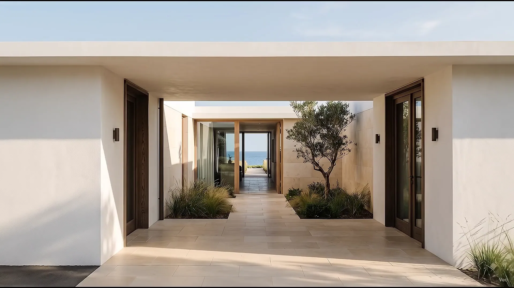
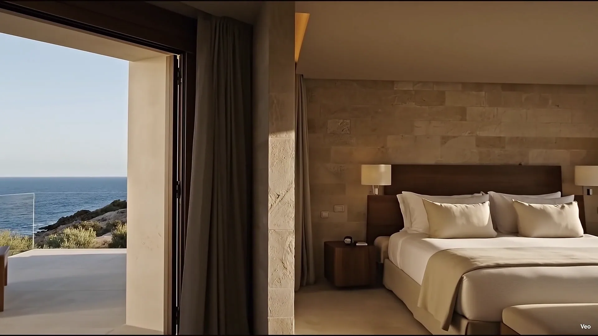
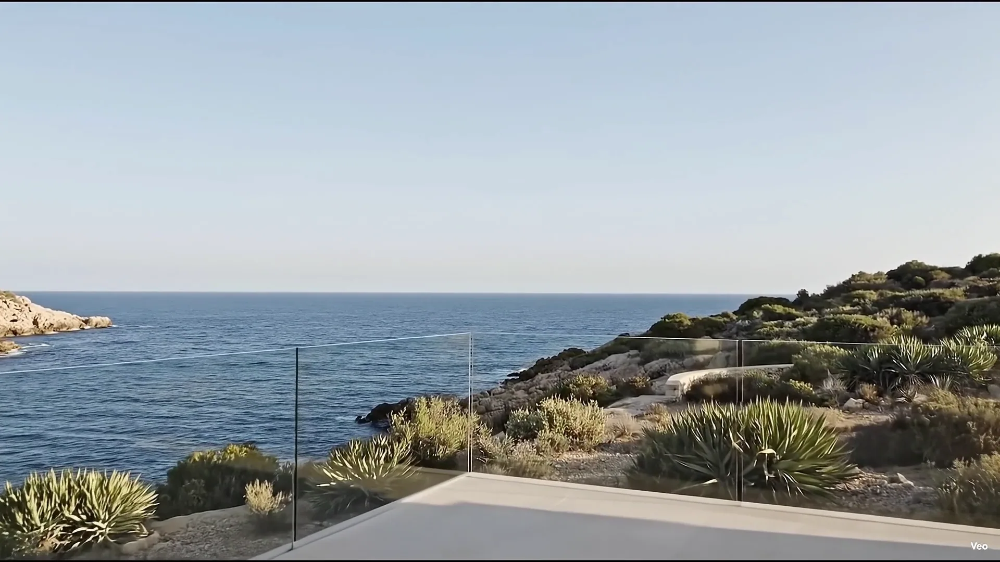

A slower sense of place.

01 A COASTAL RETREAT
바다로 이어지는 느린 하루.
02 THE COURTYARD
햇빛이 드는 중정에서 걸음을 늦춥니다.
03 THE PASSAGE
긴 그림자를 따라, 방으로 이어지는 길.
04 THE ROOM
리넨의 결에서 바다의 수평선까지.
Room to simply be.
05 THE HORIZON
오늘은, 여기 머뭅니다.
가상 호텔 / AI 영상
이동 영상을 불러오지 못했습니다. 장면 사진으로 둘러보세요.
이 여정은 JavaScript를 사용합니다. 아래 이미지로 객실과 테라스를 살펴보세요.


A ROOM AT SEAM
방의 끝에서,바다가 시작됩니다.
밝은 리넨과 따뜻한 목재, 빛이 머무는 석재.열린 문 너머로 테라스와 바다가 이어집니다.
From linento the horizon.
문 하나를 지나면,바다가 하루의 풍경이 됩니다.